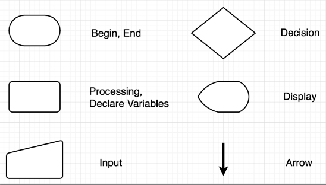
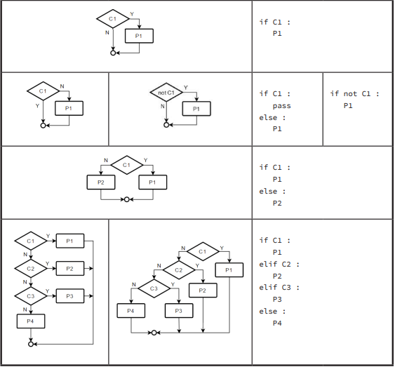
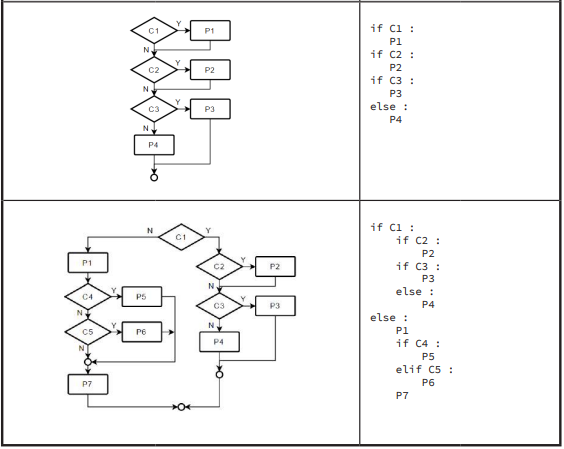
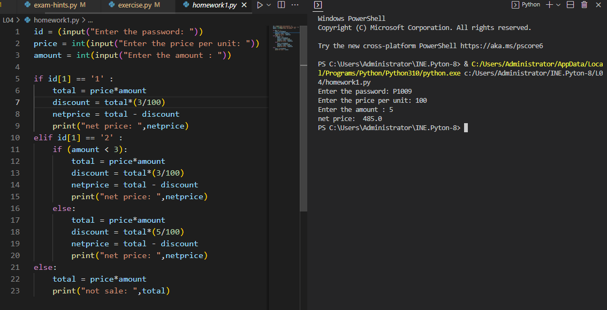
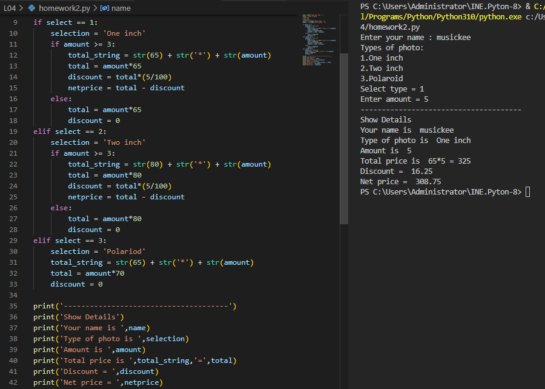

สตริงเปรียบเทียบกันตามลำดับแบบที่เขียนในพจนานุกรมโดย
'0' < '9' < 'A' < 'Z' < 'a' < 'z'
Example
'abcdegh' < 'b' เป็นจริง
'1234' < '9' เป็นจริง
print( x < y ) ได้True ถ้า x = '1234', y = '9'
print( x < y ) ได้ False ถ้า x = 1234, y = 9
Flowchart



If-elif-else
การควบคุมทิศทางแบบเลือกทำ(Decisions, Choice, Selection) คือ การเขียนโปรแกรมให้มีการตัดสินใจ สามารถเลือกได้ว่าจะทำหรือไม่ทำตามคำสั่ง ขึ้นอยู่กับเงื่อนไขที่กำหนดขึ้นมา โดยคำสั่งสำหรับการควบคุมทิศทางแบบเลือกทำในภาษาไพธอนมีเพียงคำสั่งเดียวคือ if โดยแบ่งออกเป็น 3 ชนิดคือ if, if...else และ nested if
ตัวอย่างเงื่อนไขที่เขียนแทนกันได้
| 3<=x and x<9 | 3 <= x < 9 |
| a < b and b < c and c < d and d <= e | a < b < c < d <= e |
| c=='a' or c=='e' or c=='i' or c=='o' or c=='u' | c in ('a', 'e', 'i', 'o', 'u') หรือ c in 'aeiou' |
การเปรียบเทียบที่ใช้บ่อย
| if a%2 == 0 : a เป็นเลขคู่หรือไม่ |
| if a%100 == 0 : a หารด้วย 100 ลงตัวหรือไม่ |
| if a <= x <= b : x มีค่าในช่วงตั้งแต่ a ถึง b หรือไม่ |
เข้าใจผิดเกี่ยวกับการเปรียบเทียบสตริง


« previous Home Next »